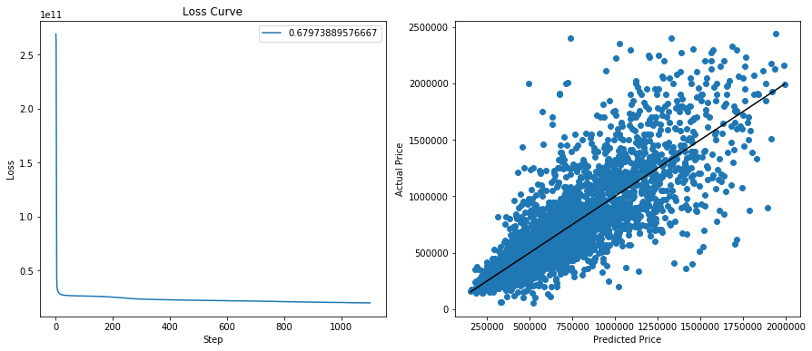
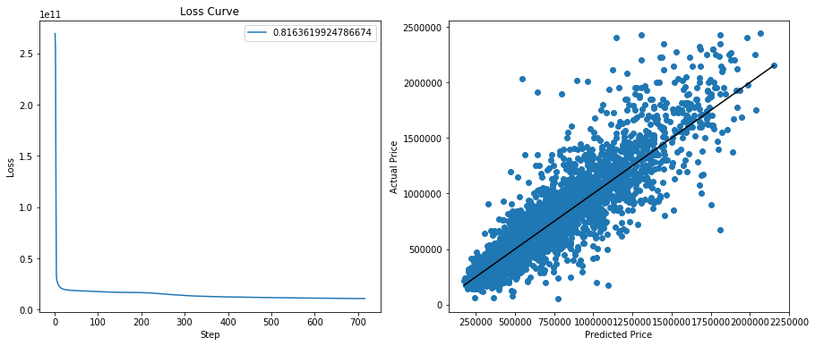
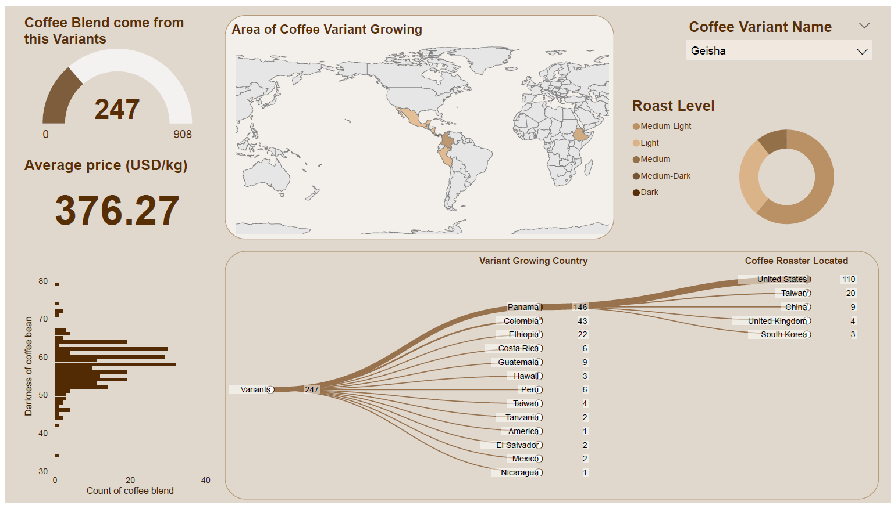

Data Analytics projects
Three projects that worked in the data analytics bootcamp.
Includes Machine learning, Python, Data visulaisation in Tableau and Javascript, ETL and more.
Scroll down
Perth Housing Analysis
Predicting Perth housing price with an optimised neural network model
Visualise Kmean clustering data in Tableau

Please click and drag to move 3D graph above
Perth Housing Analysis
Predicting Perth housing price with an optimised neural network model
Visualise Kmean clustering data in Tableau
Original Dataset Neural Network model:
Adding Coast Distance Dataset Neural Network model:

%%{
init: {
'theme': 'base',
'themeVariables': {
'primaryColor': '#a94240',
'primaryTextColor': '#fff',
'primaryBorderColor': '#8f2624',
'lineColor': '#c47f71'
}
}
}%%
flowchart TD
D1(Original Dataset) --> SE{{RandomSearchCV}} --> NN1{{Neural Network}} --> ML1([Accuracy: 67.9%]) --> C1{{Kmean Clustering}} --> N3{{Neural Network}} --> ML2([Accuracy: 72.9%])
C1{{Kmean Clustering}} --> N2{{Neural Network}} --> ML3([Accuracy: 60.0%])
D2(Add Coast Distance Dataset) --> SE{{RandomSearchCV}}
NN1{{Neural Network}} --> ML4([Accuracy: 81.6%])
A short summary of the process of opitmising neural network model
1. Use RandomSearchCV to obtain the best hyperparameters (Accuracy: 67.9%)
2. Seperate Dataset into different clusters and train a model seperately (Accuracy: 72.9%, 60.0%)
3. Train a new model with data augmentation (Accuracy: 81.6%)
Top Quality Coffee Production Chain
Web scraping top quality coffee reviews from Coffee Review
Data store in PostgreSQL after Data cleaning and ETL
Build an interactive dashboard in PowerBI
PowerBI dashboard example: (Please check the link to visualise the PowerBi file)

erDiagram
SPECIES_INFO ||--|{ SPECIES_LINK : From
SPECIES_INFO{VARCHAR(6) species_id PK
VARCHAR(21) species_name
VARCHAR(15) plant_stature
VARCHAR(16) leaf_colour
VARCHAR(15) bean_size
VARCHAR(3) species_id FK}
SPECIES_LINK }|--|| COFFEE_MAIN : From
SPECIES_LINK{VARCHAR(5) coffee_ID FK
VARCHAR(6) species_coffee_id PK
VARCHAR(3) species_id FK}
COFFEE_MAIN ||--|{ ORIGIN : Grow_in
COFFEE_MAIN {
VARCHAR(5) coffee_ID PK
VARCHAR(90) coffee_name
Date review_date
INT coffee_rating
INT agtron_WB
INT agtron_AG
INT aroma
INT acidity
INT body
INT flavor
INT aftertaste
VARCHAR(3) roast_lv_id FK
VARCHAR(4) roaster_ID FK
FLOAT price_per_kg_USD
}
ROASTER ||--|{ COFFEE_MAIN : made_by
ROASTER{
VARCHAR(4) raoster_id PK
VARCHAR(40) raoster_name
VARCHAR(7) city_id FK
}
CITY }|--|| ROASTER : in
CITY{
VARCHAR(30) roaster_city
VARCHAR(7) city_ID PK
VARCHAR(6) country_id FK
}
ORIGIN ||--|{ COUNTRY : in
ORIGIN {
VARCHAR(5) coffee_ID FK
VARCHAR(5) origin_id PK
VARCHAR(6) coffee_origin_country_id FK
}
COUNTRY ||--|{ CITY : in
COUNTRY{
VARCHAR(6) country_id PK
VARCHAR(40) country_name
}
ROAST_LEVEL ||--|{ COFFEE_MAIN : Roasted
ROAST_LEVEL{
VARCHAR(12) roast_level
VARCHAR(3) roast_lv_id PK,FK
}
Entity Relationship Diagram